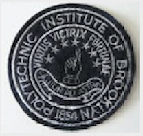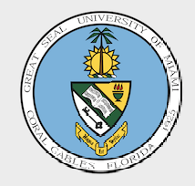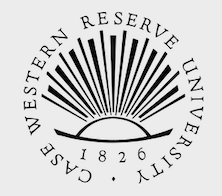
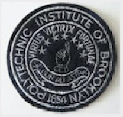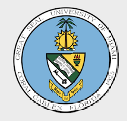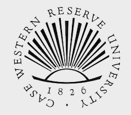
 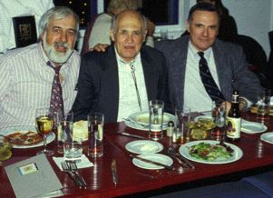 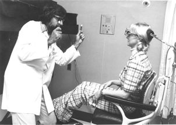 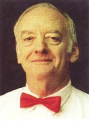
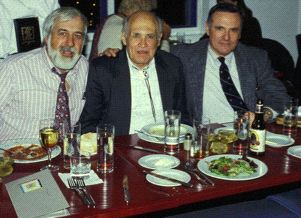 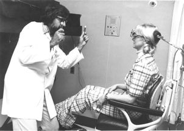 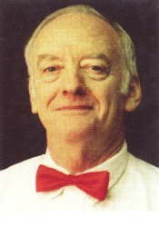
 The Neural Integrator is Resettable The Neural Integrator is Resettable
Louis F. Dell'Osso, Ph.D., is a Professor Emeritus of Neurology amd formerly a Professor of Neurology and Biomedical Engineering at the Case Western Reserve University School of Medicine and a biomedical engineer and Director Emeritus and Principal Investigator of the Daroff-Dell'Osso Ocular Motility Laboratory at the Louis Stokes Cleveland Department of Veterans Affairs Medical Center with continuous VA Merit Review funding since 1973. After graduating from Brooklyn Technical High School in 1957, Dr. Dell'Osso did his undergraduate (1957-1961, B.E.E. degree) and early graduate (1961-1963) training in Electrical Engineering at the Polytechnic Institute of New York (formerly, Brooklyn Polytechnic Institute). He completed his graduate studies (1963-1966) in Electrical and Biomedical Engineering at the University of Wyoming, under the guidance of Dr. Francis M. Long who founded the first Accredited Baccalaureate Program in Bioengineering in the country. In 1968 he was awarded the first Ph.D. degree from that program, which has since been renamed, the Francis M. Long Bioengineering Program. Dr. Dell'Osso worked for Republic Aviation (1961-1963) on electronics for the F-105D Fighter-Bomber and for Westinghouse Research and Development Labs (1963) on single-gun color TV displays after obtaining his B.E.E. and before beginning his studies for a Ph.D. During the summer of 1964, he worked at the U.S. Navel Medical Research Institute. After obtaining his Ph.D., he returned to Westinghouse Research and Development Labs (1966-1970), where he: worked on cardiac output, oxygen consumption, and pulmonary analysis devices; developed a catheter for blood dilution and heperinization during in-line blood gas, pH, and glucose monitoring; developed diagnostic ultrasound equipment; and designed and constructed an automated cardiac arrhythmia-anomalous beat detection and monitoring system. He was on the faculty of the Departments of Biomedical Engineering and Neurology at the University of Miami and a biomedical engineer and Co-Director and Principal Investigator of the Ocular Motor Neurophysiology Laboratory at the Miami VA Medical Center from 1970 to 1980, during which time he continued his research into ocular motor oscillations. In 1977, he became the second Ph.D. in bioengineering to achieve the rank of tenured Full Professor in a clinical department of an American medical school, the Department of Neurology (Dr. David A. Robinson had previously become Professor of Ophthalmology at Johns Hopkins University). In 1980 he and Dr. Robert B. Daroff were recruited to Case Western Reserve University and the Louis Stokes Cleveland Department of Veterans Affairs Medical Center. From 1980 to 2010, Dr. Dell'Osso has served as a Professor of Neurology and Biomedical Engineering at Case Medical School and the School of Engineering. From 1980 to 2010, he served as Director of the Ocular Motor Neurophysiology Laboratory (endowed and renamed, "The Daroff-Dell'Osso Ocular Motility Laboratory" in 2004) at the Cleveland VA Medical Center. In 2010 he retired from both the VA, on March 31st (where he was given a WOC appointment) and Case, on June 30th (where he was elected Professor Emeritus of Neurology and Director Emeritus of the Daroff-Dell'Osso Ocular Motility Laboratory). Dr. Dell'Osso has studied congenital nystagmus, acquired nystagmus, and other types of ocular motor oscillations for over four decades. His 'top-down' control-systems approach reflects his educational background and has provided a needed alternative view to the 'bottom-up' approach used by others. His philosophy of elucidating normal ocular motor function by studying abnormal function has provided insights into the functional architecture of ocular motor subsystems and overall ocular motor behavior. This is especially reflected in the resulting computer models of ocular motor function and dysfunction that simulate not only the specific oscillations recorded from patients and animal models but also the ocular motor behavior they exhibit. It is the latter, more difficult simulation problem, that distinguishes a behavioual OMS model from a piecemeal waveform generator that can neither duplicate the known ocular motor behavior of individuals with INS nor provide viable, testable hypotheses of underlying mechanisms. Consistent with his engineering training, Dr. Dell'Osso has translated his 'basic' research findings into clinically useful diagnostic eye-movement signs and therapeutic approaches, both optical and surgical. By concentrating on studying function rather than specific brain sites, diseases, or patient populations, he was able to discover clinically effective therapies for congenital nystagmus and translate them into equally effective therapies for acquired nystagmus. This type of research cannot accurately be described by the classical terms, 'basic' or 'clinical;' it is, however, the prototype for what has more recently become known as, 'translational research.' |